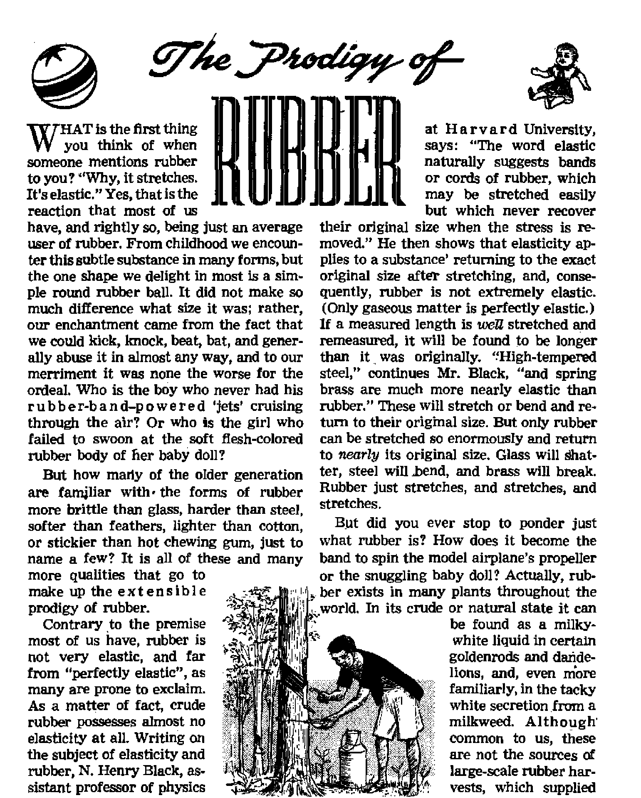

Beprinted by permission from the Philadelphia Sunday Bulletin, December 16, 1901
MARCH 22, 1952 semimonthly
THE MISSION OF THIS JOURNAL
News sources that are able to keep you awake to the vital bwtfl of our times must be unfettered by censorship and selfish Interest*, "Awake I* has no fetters. It recognize® facts, faces facts, is free to publish facts. It is not bound fay political ambitions or obligations; it le nhampered by advertisers whose toes must not be trodden on; it is ^prejudiced by traditional creeds. This journal keeps itself free that xt may speak freely to you. But it does not abuse its freedom. It maintains integrity to truth.
"Awake lw uses the regular news channels, but is not dependent on them. Its own correspondents are on all continents, in scores of nations. From the four comers of the earth their uncensored, pn*the*scenes reports come to you through these columns. This journal's viewpoint is not narrow, but is international. It is read in many nations, in many languages, by persons of all ages. Through its pages many fields of knowledge pass In review—government, commerce, religion, history, geography, science, social conditions, natural wonders—why, its cover* age is as broad as the earth and as high as the heavens.
"Awake F* pledges itself to righteous principles, to exposing hidden foes and subtle dangers, to championing freedom for all, io comforting mourners and strengthening those disheartened by the failures of a delinquent world, reflecting sure hope for the establishment of a right* ecus New World.
Get acquainted with "Awake 1” Keep awake by reading “Awake!”
Published Semimonthly By WATCHTOWER BIBLE AND TRACT SOCIETY, INC-
117 Adama Street Brooklyn 1, N, Yn U. B* A.
N. H. KNOEift, PreHdenJ GaANT SulTSB, frorttary
Printing thia itsue: 976,000 Five cent* a copy
Lan in aim ia which tfcli mipizlM b aibtliW; Senjlnnxitbly*-AfrikWK, Enellxhr Finnish, Qcinun, Norwegian, Spanish r Monthly—Jtaglrii. French, Gretk, PortmKHt Stedbli, Ukrainian.
Offices Yearly Hate
Am«ri(j4, ILS., 11T Adaufe St , Brooklyn 1, N.Y. fl AiflFali*, 11 Beresford Bd*, strathfleld, N.3.W. 8 s
Canada, 40 Irwin Are., Toronto Ontario fl England, 34 Oaten Terrace, Londotn W. 2 Is Soith Africa, 623 Boston Hwte, Capa Town 7i
Entered as second-dass matirr at Brooklyn, N. T
ItwlttaMtat Should be w>t to office ip Four country in compliance with rtEhUtloos to guarantee safe delilW of RemftfiApp are accepted at . BrooMyn from where mt office la located,
by International money order only, SutHcriptlan ratea in different countries art; here stated in local eurretH?, Natlea *f ntptrettai (with renewal blank) Is sent at least tvo Issues before subscription ei-pirn. Change of idfrut whcnisent to our office may be expected Hfocttre within one month P Bend your old u well n mt address.
tat of March 3, 1879, Printed in U, 8. A.
CONTENTS
Picking the Pockets of the Taxpayer
Judicial Conniving at Duncan Mob
Justice Catches Up with Mobocrats
Nostradamus—Gifted Prophet or
“Your Word Is Truth”
From General Hershey to Draft Boards 26
S'“Nowitis high time to awake."—Romans 13:11 W
Voltime XXXIII
Brooklyn, N. Y., March 22, 19M
Number 0
UNTIL thirty-eight years ago the world had never known a global war! And no generation previous had experienced such a simultaneous assault of global famines, pestilence and earthquakes “in one place after another”. Before 1914 general world fear was unknown. So when the peril of that year became world-spread, the sweeping claim was coined: “Make the world safe for democracy,”
But rather than safety for the peoples of all nations and for popular government, the very opposite result marked the passing years. Not security for democratic rule, but a trend toward an even more deadly form of the “total state” sprang from the womb of the first world war. Russia fell to the Communists. With ridiculous ease, Mussolini and his blackshirted fascists grabbed Italy. Hitler rose from beergarden oratory to burn a lasting impression in German minds; then next burned the Reichstag and stole the German government for his nazis. Behind alibi and blitzkrieg he ringed in all Central Europe, smashed France and teamed with Italy and Japan to drag the world’s democracies back into a fight for life.
The democracies again prevailed in battle—but to what end? a safe world? Hardly that Thfe “cold war” from 1945 to the close of 1950 had subjected the “free nations” to months of blockade and airlift operations, increased psychological warfare, $43,000,-000,000 in foreign aid by the United States and a full-scale shooting war in Korea. And for all that, Russia calmly continued to pile up “satellites” and hurl invectives.
The nearly four decades since 1914 have further mocked democratic principles in waves of “genocide^*, mass killings of racial, national and religious groups. Think of the 1,200,000 Armenians massacred by the Turks in 1915. Consider Hitler's bloody purge against the Poles, his killing more Jews than there are people on the isle of Cuba, and his fanatical attrition against Jehovah’s witnesses. Now set up these ex amp les beside the current mass delivery to slaughter of the Chinese Reds in Korea.
This latter example presents a new twist to the act, since the Chinese have been armed and even assumed the role of aggressors; yet their barbaric indoctrination has prompted them to insane acts. Russia's understood role in inspiring the Korean conflict and China's intervention make her basically responsible for such carnage. Hordes of Chinese foot soldiers have been reported charging straight into the face of oncoming tanks, climbing on and pounding vainly at their armored sides.
Now remember that the nominally democratic Chinese Republic under Chiang is penned up on the one island of Formosa. All the vast mainland of continental China lies enchained by masters of such antics. In Europe, menacing communist might bristles from the Black sea to the Baltic and Is held back only by a hairlike military line of agreement across Germany. The lone bond between Western Europe and the American “arsenal of democracy” is the Atlantic Pact, as yet mostly on paper and admittedly only a defensive alignment at best. Finally, Russia, at the base of current atrocities, sits around the same U. N. tables with the democracies. Would you say the world has been made safe at all, not to mention “safe for democracy”?
Men of affairs do not think so. Internationally famed British military analyst Captain Liddell Hart, among the conclusions drawn in his book Defense of the West, says that “the chances of peace and war are closely balanced—almost on a knife edge”. Testifying to the divided state of the world, one editorial writer admits: “It is too much to expect an organization of mere men to establish perpetual peace throughout the world. Even among intelligent people there is not always harmony in the family.” “Mere men” are inadequate -for the task, so religious leaders usually bring God’s name into it. However, they habitually ask divine salvation and blessing for some selfish human order of things already in control. Nevertheless, to show how the clergy, too, recognize the current threat to world safety, note among the words of an international appeal made by Polish Catholic priests in the fall of 1950: “We call upon you, the Catholic priests of the world. Let us pray that God Almighty may enlighten those who eir and avert the threat hanging over the nations.”
The world full of tal\ of “safety”, “security” and “peace”; but the mounting facts cry out that the preaching is not practiced. New airports, institutions, etc., may be dedicated to the cause of peace; the slogan of the times may have been “make the world safe for democracy”; and the U. N/s top governing body is indeed called the "Security Council”. But all such surface growth has no abiding roots. Thus for all the fears, wars, threats, organizations and charters, the world has never returned to the normalcy of 1913.
Nor will it, by human ability. History’s greatest prophet, Jesus Christ, forewarned that when such critical times came, paralleled in the same generation by the worldwide announcement of the birth of God’s kingdom, it would be a sure sign of the approaching end of the old system.
What men cannot provide in the way of a bond of international harmony and security, men of good will should now turn to God’s Word to find. Says the wise proverb: “The name of Jehovah is a strong tower; the righteous runneth into it, and is safe.” And again: “The fear of man bringeth a snare; but whoso putteth his trust in Jehovah shall be safe.”—Proverbs 18:10; 29:25, Am. Stan. Ver.
Whoever follows this advice now will not misplace his trust or live in fear. Rather, he will have about him the only “strong tower” of absolute protection, the “name of Jehovah”. Therefore, regardless of what evils may overtake him in these perilous times, his faithfulness to God promises eventual life everlasting in Jehovah’s new world, which the present times prove to be now very near. Liberal human democratic governments have done much for man in this world. Still, they but touch the surface of his real needs. The much-desired human liberties in the complete sense, accompanied with the blessings of continued life and free of the fears of insecurity—all these things and more will be the lot of the new world’s citizens. Not a democracy, but a theocracy will that be. Not temporary, but permanent; not impotent, but backed by almighty power; not war-ridden, but peace-blessed—such is Jehovah’s Theocracy, the only hope of all who honestly wish to “make the world safe”!
Corruption in the U. 5. Reaches an All-Time High
NO ONE enjoys finding out that his pockets have been picked. Least of all would anyone enjoy learning that his pockets had been picked by his own servants, by the very persons he was paying to look after his interests. Yet investigations reveal the fact that public servants in every department of the government, and particularly in the Internal Revenue Bureau, are playing false to their trust, picking the pockets of their employers, the American taxpayers. As Isaiah the prophet said more than 2,500 years ago: “Thy princes are rebellious, and companions of thieves: every one loveth gifts, and fol-loweth after rewards/’—Isaiah 1:23.
dent more than one political bigwig escaped the penalty due him for breaking the law, because of White House intervention.
But, as Life magazine (October 8, 1951) well expresses it: “What is shocking and
new is to find Kansas City-style corruption On the Federal stage, especially at a time when the Federal government has swollen to dimensions that pervade all U. S. life/’ 1951 Tax Scandals
The following^ taken from “A Chronology of the Corruption Issue” as published in the New York Times,, December 23, 1951, gives an idea of the extent of the corruption in the Revenue Bureau.
“April 24—Finnegan announces resignation to give more time to private law practice. (He has since been indicted on charges of using his office for private gain.)
“June 27—►Denis W. Delaney, Boston
Of course, corruption in the United States government is nothing new. During General Grant’s administration (1869-1877) congressmen, cabinet officers, the White House staff, relatives of the president as well as a host of other officials, were involved in scandal. And scandal again touched the official family of the nation during President Harding’s brief administra-' tion (1921-1923). In the dozen years that Roosevelt was presi-
Beprinted by permission from the Philadelphia Sunday Bulletin, December 16, 1901
Collector of Internal Revenue, suspended pending investigation. (Later fired and indicted for bribery.) [Convicted of bribery, January 22, 1952]
“July 31—George J. Schoeneman, Commissioner of Internal Revenue, resigns; Mr. Truman names John B. Dunlap to replace him. . . .
“Sept. 28—Collector James G. Smyth and eight employees in San Francisco office suspended. (Smyth has since been indicted.)
“Oct. 23—Joseph P.
Marcelle, Brooklyn Collector of Internal Revenue, resigns under fire. . . .
“Nov. 17—Mr. Truman forces resignation of T. Lamar Caudle, Assistant Attorney General in charge of the Justice Department's Tax Division, for engaging in 'outside activities . . . incompatible with the duties of his office’.
“Nov. 28—President fires t h i r t y-o n e Revenue Bureau officials and employees.
“Dec. 4—Abraham Teitelbaum, Chicago attorney, tells King subcommittee that names of high officials, including Caudle and Charles Oliphant, chief counsel of the Revenue Bureau, were mentioned in connection with an offer to 'fix* his tax delinquency for $500,000. (Both Caudle and Oliphant subsequently denied any part in such a shakedown.)
“Dec. 5—Oliphant resigns as chief courv sel of Revenue Bureau. . . .
“Dec. 12—Oliphant testifies he accepted favors from individuals involved in tax cases?’
Yes, according to the 17.8. News World Report (December 14, 1951): “Six of 64 collectors of internal revenue were removed or quit under fire. More than 350 other tax men went out in a shake-up involving tax frauds and irregularities. Some had fixed taxes. Some had collected fees. There were charges of bribery.” And since negligence and laziness go hand In hand with dishonesty, it is not surprising to learn that “the collection of taxes is $632,363,000 In arrears”.—New York Mirror, December 12, 1951.
And while the spotlight of publicity and Congressional investigation has shifted from deep freezers, to mink coats, to RFC (government loaning agency), and currently is fixed on the government’s taxcollecting agencies, the picking of the pockets of the taxpayers in other departments goes blithely on. Note the situation revealed by “the report of Comptroller General Lindsay C. Warren [showing] that the Maritime Commission had failed to account for two billion dollars. Among the items to which Mr. Warren took exception were $394,806,000 paid to shipowners and shipbuilders in the guise of 'constructiondifferential subsidies'; an item of $28,013,144 improperly paid for so-called 'defense features’; and a huge sum paid in 1950 to private shipowners who actually leased to the government for trans-Pacific service ships which in fact belonged to the government”.—The Nation, October 27, 1951.
But most guilty of all in picking the taxpayers’ pockets is Congress itself. How so? Because it has legalized the theft of many billions of dollars through the “accelerated tax amortization” program whereby gigantic corporations are writing off the cost of their newly constructed plants in five years instead of twenty, on Hie assumption that such were built for defense purposes.
And there are other congressionally created loopholes in the tax structure, which, according to Senator Hubert Humphrey, form the base for the irregularities in the tax-collection system. Says he: “Let’s not just clean the top of the rug. Let’s check up on some of the big stealing; [that is] inadequate tax laws and tax-law loopholes.”
“Companions of Thieves”
Getting the facts regarding the various scandalous situations has not been easy. The consistent policy of those in positions of responsibility seems to be to ignore, cover up or whitewash corruption. In this respect President Truman is following the precedents set by Grant and Harding, He has failed to punish his immediate staff for questionable practices. When the RFC was being investigated he termed the investigation “asinine”, until it revealed such a malodorous condition that he simply had to act. He repeatedly refused to release for investigation by a Senate committee a confidential report regarding a certain Empire Ordnance Corjioration, whose dealings with the government during World War II topped all others In corruption.
Truman had requested Judge Murphy to head up the cleaning campaign. But according to Washington reports, when Murphy presented a 23-page letter outlining the powers he would need to make such a campaign, Truman and his cabinet were thrown into a panic and they decided to let the job be handled by the very one most responsible for the situation, Attorney General McGrath.
And the heads of the various departments are following Truman’s example. When Senator Williams, who spearheaded the tax department investigations, wanted information regarding a certain New York tax office he was refused, and it took Senate committee action to clean up the worst mess yet discovered in the Internal Revenue Bureau. Regarding efforts to clean up the mess at St. Louis, The Nation, October 27, 1951, states:
<fWhen the St Louis grand jury, in its first investigation, failed to indict Finnegan, Judge George H. Moore charged that ‘certain parties in'official quarters did not show much zeal in giving the jury or the United States Attorney’s office all the assistance to which they were entitled’. In fact, Finnegan would not have been indicted if Senator John H. Williams had not insisted that the Treasury Department produce a mysterious 'missing file' which contained the vita] evidence. In both St. Louis and San Francisco the Department of Justice sought to discourage investigations. It is apparent, however, that Senator Williams has received substantial aid from the lower echelons of the bureau/’
And what about the congressmen themselves who form these investigating committees? For instance, take Representative King, of California, who heads the House committee investigating tax scandals. His own committee “Investigated” him in a most genteel sort of way, and that in closed hearings (why closed hearings?), and then gave him a clean bill of health in spite of the fact that “there are documents that not only indicate that King brought pressure on the Justice Department in the Gregory case, but [that King] fought to keep a loophole in the tax law for all—all at Gregory’s urging”. And who is Gregory?
Gregory is president of a savingsand loan association, and is under fire by the Home Loan Bank Board for: “1. Making fantastic loans to firms in which he had financial interest; 2. Using depositors’ funds to get gambling concessions in Mexico; 3. Diverting G. I. loans from building veterans’ homes to financing a project in which he was part owner; 4. Setting up 21,000 accounts of $1 for voting purposes, to keep control. [The] board also reported alleged tax irregularities to the Internal Revenue Bureau. . . . After a four-year legal battle [King] brought pressure on the Justice Department to compromise.” Leading the House investigations, and himself “a companion of thieves”!
Nor is this unique. When Truman suggested that ail government officials and employees be made to make public their total income, Congress set up such a howl that he had to abandon the idea! Seemingly congressmen could no more afford to do such a thing than could the blackmailers, the fee-splitters, etc.
Is Relief in Sight?
Thomas Jefferson once stated: “The whole art of government consists of being honest.” If that is the case then it is fast becoming a lost art, for, according to a New York Times dispatch, December 30, 1951, former President Hoover declared:
“More dishonesty was exposed in government officials and departments during the last year than we have ever known in our history.”
Various remedies have been offered: a Senate subcommittee under Paul H. Douglas urges a code of ethics; President Truman has a plan for the reorganization of the Internal Revenue Bureau; the Hoover Commission has its recommendations; others suggest an increase in salaries for Federal employees so as to get a higher type of public servants as well as to obviate their having to take on outside work. But all such measures would be mere stopgaps so long as the core remains dishonest.
Yes; what hope of improvement as long as there is a president in the White House who penalizes a man for honestly, ably and fearlessly discharging his duty and fires his superior who objects, as in the case of Milligan and Biddle; who publicly goes on record as approving men who have offered and accepted bribes such as California oilman Pauley and one-time Democratic National Committee chairman Boyle; who winks at undercover deals and influence peddling by his own staff; who commutes the sentence of a gambler convicted of tax dodging on his race horse winnings; who pardons a movie magnate convicted of tax evasion and a prominent politician convicted of mail fraud; etc.
Nor can improvement be expected as long as the attorney general himself is a trustee of a colossal tax avoidance trust of some five million dollars and is charged with acting as an attorney for foremost U. S. racketeer Frank Costello, etc.
Nor can we look to organized religion for help in spite of the blast that the foremost Catholic prelates recently made against corruption in government. Why not? Because they also are not interested in cleaning up the situation, as the follow-
Ing report from R. S. Allen, Washington columnist, shows: “Three men have saved Attorney General Howard McGrath from being fired—for the time being... . Cardinal Spellman, who made a long distance plea from Tokyo. Sen. Theodore Green [and] Matt Connelly, powerful [Roman Catholic] White House secretary.” (Spellman has denied this.) Washington rumor said that McGrath would be given a facesaving transfer of post.
Nor will change of party in power from Democratic to Republican help much. The two previous eras of corruption, Grant’s and Harding’s, existed when the Republicans were in control, and the Republican machine that held power so long in Philadelphia was not different from the Democratic machines in other cities. And Big Business, while loudly howling about the government’s being in business, is not at all averse to injecting itself into the government by wholesale corruption of government officials and employees.
Dishonesty in government is only one symptom of a diseased civilization. Among others are: employees in private industry robbing their bosses of some half billion dollars annually; spread of narcotic addiction among youths; dishonesty in taking school examinations; dishonesty in sports. Yes, as Isaiah long ago expressed it: “The whole head is sick, and the whole heart faint. From the sole of the foot even unto the head there is no soundness in it."—Isaiah 1:5,6.
Modern Babylon is beyond healing, and the almighty God, Jehovah, is not going to let her die a slow, lingering death, but, as Bible prophecy assures us, he will soon give her the coup de grace at the coming battle of Armageddon, so that all may know that Jehovah is the Most High over all the earth and that none can violate his laws with impunity.—Psalm 83; Jeremiah 51:8; Matthew 24; Revelation 16:14,16.
Judicial Conniving at
. ■ ■ ■ . ■ . “ ■ . ' . I .
Duncan Mob Violence
Condemned
DURING July, 1949, some rabble-rousing legionnaires and mobsters invaded the circuit assembly of Jehovah’s witnesses, in Duncan, Oklahoma. The atrocious outrages against clean worship in Duncan resulted in no prosecution of the criminals by the state officials. The federal officials failed to take action against the law violators.
Jehovah’s witnesses filed a civil rights action in the federal court against the mobsters and officials. It was to redress the deprivation of their freedom of assembly and of worship guaranteed by the laws of the United States and Oklahoma.
A judgment dismissing the case in favor of the mobsters and officials was entered by the United States District Court during November, 1950. The federal court of appeals reversed the case during December, 1951, and sent it back to the federal district court in Oklahoma for a new trial, because of errors committed by United States District Judge Vaught.
The trial of the case in November, 1950, attracted more than ordinary notice in the public press of the southwest part of the United States. Also the radio broadcast the events of the trial. This wide publicity was focused upon the misconduct of Judge Vaught and the resistance to such judicial lawlessness by Hayden C. Covington, counsel for Jehovah’s witnesses. The prejudice and antics on the bench by the judge prevented Jehovah’s witnesses from receiving a fair trial by jury.
The illegal action of Judge Vaught chal-lengedby counsel for Jehovah’s witnesses, backed by power of Jehovah at the trial,
J ■■
could not be stopped by counsel. Faithful and continuous objections by counsel for Jehovah’s witnesses caused the judge to repeat his explosions. The judge’s fulminations and his vigorous advocacy against Jehovah’s witnesses,
over protests of counsel for Jehovah’s witnesses, lasted throughout the trial' of three days.
Deadly venom and debasing prejudice spewed out of the mouths of the lawyers for the mobsters and officials following the trial misconduct of the judge. This added fuel to the flames. The jury burned up the case of Jehovah’s witnesses by a verdict in favor of the mobsters and officials. All this produced insult upon injury from the indignities suffered by Jehovah’s witnesses in Duncan.
On the trial Judge Vaught unlawfully denied Jehovah’s witnesses the right to offer material evidence about their assembly for clean worship in Duncan. Covington attempted to preserve the error for the appellate court. He was threatened by the judge with a jail sentence for contempt of court on two occasions because he faithfully saved the points for appellate court review. He challenged twenty-seven other procedural errors of Judge Vaught on the trial of the case for review in the appellate court. The grounds were that Jehovah’s witnesses were being deprived of a fair trial.
The cask was appealed to the federal court of appeals. The appellate court heard the arguments of counsel for the parties at Wichita, Kansas, in November, 1951. During the argument made by counsel for the mobsters and officials, one of the three judges (Judge Murrah) interrupted the lawyer for the mobsters to make a statement. He said that the lawyers were trying to hide something. The judge said that the American flag represents the constitution, which stands for a fair trial. He said that it was the duty of Judge Vaught to give Jehovah’s witnesses, victims of mob violence, a fair trial and that Judge Vaught had not ensured them a fair trial1, as it was his responsibility to do.
Judge Murrah wound up his stirring comments from the bench by stating with deep feeling that it was manifest that Judge Vaught had turned his face against Jehovah’s witnesses and their counsel and that they did not have a chance, under the circumstances, to get a fair trial.
The penetrating words from the bench stunned the counsel for the mobsters and officials. It was the handwriting on the wall forecasting the judgment of the court to follow. The opinion of the court vindicated the efforts of Covington to preserve the trial procedural rights of Jehovah’s witnesses. It sustained every one of the twenty-seven points of error against the judge raised by him. It condemned the wrongdoing of the trial judge and the misconduct of the lawyers for the mobsters and officials. The court, among many other things, said:
“Appellants brought this action in the United States District Court of Oklahoma to recover damages for injuries alleged to have been sustained in the deprivation of their civil rights by the appellees. Jurisdiction is conferred under 28 USCA 1343.
“Appellants are all Jehovah’s witnesses. The appellee Webb is the chief of police of the city of Duncan, Oklahoma; the appellee Powers is one of the commissioners of the city of Duncan; the appellee Wood is the superintendent of schools for the city of Duncan; and, the other appellees are citizens of that city.
“During the spring of 1949, the Jehovah’s witnesses planned a district convention in the city of Duncan and obtained a lease of the Duncan high school auditorium beginning July 15 and ending July 17, 1949. The complaint alleges that on July 17, when appellants had assembled for their meeting in the auditorium where an address was to be delivered, ‘the defendants armed with sticks, rocks, guns and other instruments of violence, entered the auditorium forcibly, and attacked the assem-bledgroupsandbrokeuptheassembly.’ . . .
“Marshaling the evidence, in their behalf, appellants call attention to the official order to remove their street banners, as indicating official hostility, and to the fact that the police were warned and alerted to the threatened action of the citizen defendants. Specifically, they call attention to the use of a sound equipped automobile by some of the appellants on Sunday, exhorting the ‘red blooded Americans’ of Duncan to come to the high school auditorium and ‘fight for the flag’ and 'your country’; to the altercation between one of the appellants and defendant March; and, to the fact that one of the Jehovah’s witnesses went to the city jail to invoke protection of the law for himself and his brethren. Then it is said that although forewarned, Webb did nothing to prevent the formation of the mob, which on Sunday afternoon forcibly entered the auditorium to break up the religious assembly. It is charged that when the rioting broke out Webb and Powers came to the auditorium in their capacity as city officials, but did nothing whatsoever to quell the riot or restore order, and that order was restored only after one of the Jehovah’s witnesses called the city firemen, who quenched the violence with the water hose. Appellants urge, that by this willful failure to keep the peace or restore order, the city officials affirmatively deprived them, under color of law, of constitutionally protected rights, and that they are therefore entitled to recover from these appellees as a matter of law. . . .
in
“When all the evidence bearing upon the action or inaction of the city officials is considered in its totality we think it presented a factual issue of whether they exercised reasonable diligence in the performance of their statutory duties, or whether they abdicated to the mob. . . . It is sufficient in the light of what we have already said concerning the conduct of the city officials, that the evidence on the whole presented an issue of fact whether they joined the conspiracy or participated therein to give it the requisite color of law. ...
“Reversible error is assigned in the admission and exclusion of other testimony, and the alleged inflammatory and prejudicial argument by counsel for appellees. The trial was long and vexatious, and marked by frequent encounters between the court and appellant’s counsel.... Since in our view of the case the judgment must be reversed, we deem it unnecessary and inappropriate to consider the admissibility of each and every bit of evidence admitted or refused. . . . Appellees’ counsel did engage in flights of oratory beyond the bounds of evidence, clearly calculated to inflame the jury against an unpopular minority sect.
“It is not too much, we think, to indulge in the expectation that the case will be retried in an atmosphere more conducive to the proper administration of justice. The judgment is reversed and remanded with directions to proceed according to the views herein expressed.”
It is seen from the above that in times of stress and crisis caused by mobs Jehovah’s witnesses must oftentimes fight in the courts for the preservation of their preclous liberties of assembly and worship. More than this they must fight to preserve a fair trial and due process of law even to the point of appealing to the higher courts to forcibly bring a lawless judge into Une with the law.
While justice may never be attained in cases of mob violence in the courts, it will be gotten at Armageddon. Judges and juries may have their picnic now in pitching the law to the wind and in making sport of Jehovah’s witnesses. They may wink at violence and vicious efforts to stop the preaching work of Jehovah’s witnesses. They have framed mischief by law and will continue to do so as prophesied of them in the Bible (Psalm 94:20). But the day of their slander and Slaughter of the rights of Jehovah’s witnesses draws to a speedy close. Soon the picture will change. The tables will be turned. Jehovah says: "To me belongeth vengeance, and recompense; their foot shall slide in due time: fop the day of their calamity is at hand, and the things that shah come upon them make haste.” (Deuteronomy 32:35) “Whenever it is that they are saying, ‘Peace and security!’ then sudden destruction is to be instantly upon them just as the pang of distress upon a pregnant woman, and they will by no means escape.”—1 Thessalonians 5:3, New World Trans.
He Was Talked into It
U On December 19, 1951, an International News Service dispatch from New "York related the criminal plunge taken by a desperate man: “Police are holding a man on a charge of grand larceny. They say he stole his mother-in-law’a teeth to keep her quiet.”
By "Awakel” wrrwpondant In El Salvador
^pHEN come and get it—Salvadoran style! ] Tortilla soup Is a clever blending of many Ingredients. Here is how it is made: Break several large thin tortillas into pieces and fry in butter until crisp. Make sauce of six onions and one small can of tomato paste or equivalent in fresh tomatoes; add a small piece of garlic. Divide chicken into serving portions and return to its broth; to this, add the tor* tillas and tomato sauce. Break up one-half pound of cream cheese into small pieces and float on top of soup. Place in oven and bring to serving temperature. Salt and pepper to taste; garnish with parsley, and serve. Try It.
But if you are hungry, you will want more than soup. How about rice Salvadoran style? When preparing rice avoid making the com* mon and serious error there is in rice preparation. The whole success depends on this one thing, that you not soak the rice. After it has been washed quickly in cold water, let It dry in the sun. But if there is not time for this, make quitf certain that all water is drained off so that it feels almost dry; now we are ready for the important step. Grease a large frying pan or baking till with butter or cooking oil, and spread the rice out in a thin even layer. The pan of rice should now be placed over a hot flre and toasted until the most deliciously tempting'aroma begins to arise. This aroma will be the exact equivalent to fresh-roasted, buttered popcorn. Thi^ is your signal that all is going well, but one must take care at this point to stir the rice well so as to avoid burning and also to ensure even browning. Next, remove from flre and place in a pan that is not too deep and which has a tight-fitting lid. Spread the rice out evenly in the pan, adding salt to taste. Then add either boiling water or hot chicken broth until the level of the liquid is slightly less than twice the depth of the dry rice in the pan. The rice should be placed on a hot flre immediately,. and when cooked it will be light, fluffy, dry and free-grained. The rice may then be served plain or in any number of different ways, according to the ingenuity of the Individual cook.
Here is a tip. A meal might be served without French bread, meat or green vegetables,
but never without beans!. And here Is why: Cook one pound of beans until very tender, in just enough water to prevent burning. This may be done especially well in a pressure cooker. When beans are tender, run them through the food grinder two or three times; or they may be mashed as desired. Salt them to taste, and add the beans to the hot lard and onions, allowing them to fry thoroughly until most of the moisture has cooked out. The lard should mix with the beans. When done the beans should be served at once with or without sweet cream, according to your fancy. Yum! Are they delicious!
Here is something different. Husk 15 ears of tender com and remove from cob. Add a half cup or more of milk and allow excess to drain off. Add 6 tablespoons of butter, 6 tablespoons of lard, sugar and salt as you like it. Mix thoroughly with potato masher. Finally, roll out individual tamales half the size of the original cob, placing them in clean husks. Tamales should then be steamed until well done. They may be served hot or cold, with or without cream. The tamale may be tied together so as not to unroll from its husk wrapper while cooking.
‘j? And now for a good drink—horchata. This is probably the most nourishing drink in El Salvador. It is sold along all market streets. When the air is cool it is served warm, and when warm it is served chilled. Take one-half pound of morro seeds, one-half pound of sesame seeds and a quarter of a pound of coriander seeds. Grind the three kinds of seeds together and toast without burning. Add enough milk to the flourlike mixture to bring to drinking consistency. Add sugar and cinnamon to taste. Mix thoroughly, using mechanical mixer if available. Serve any time. It is a treat hot or chilled.
In order to thoroughly enjoy a meal, the mind must be In a proper receptive state. The Salvadorans recommend the Master's words as food for thought before they sit down to dine, "Man must live, not on bread alone, but on every utterance coming forth through Jehovah's mouth." (Matthew 4:4, New World Trans,) If you hunger spiritually, dine upon this Word and live.
MILLENNIUMS before human genius hit upon the idea of jet propulsion sea animals made the principle of rocket aircraft and flying jet submarines a reality. The octopus, squid, argonaut, and the cuttlefish are among the famed jet-propelled craft of the sea. These all belong to the cephalopod family, meaning animals that have their heads united with their feet or arms.
The octopus is the most popular of the cephalopods. There are some 150 species known to man. Octopuses are found in all waters, but rarely in the Arctic Circle and in waters around the Antarctic continent. Most of them live in comparatively shallow water, about 600 feet or less, though some have been found two miles deep. Others have been seen 1,000 miles out at sea floating or swimming on the surface.
The octopus is known to be the ugliest marauder of the sea, and is often called the devilfish. It is a natural submarine arsenal loaded with eight arms. Each arm of a large octopus has about 80 suction disks; each disk is an inch or so wide.
It prefers hiding in rocky crevices on the bottom, or in cavities in the coral. Often it will squat in the midst of a nestlike lair of boulders, which it has dragged together, for its own safety or to nab an incautious crab or fish. The eight tapering arms sprawl in all directions, extending and contracting, clinging to the rocks with their powerful vacuum suction cups, or weaving through the crevices exploring everything within reach. Elevated high on the body are a pah' of large coldly gleaming eyes capable of seeing in all directions.
If an unwary fish ventures within reach, a long tapering tentacle will sweep out with lightninglike speed and encircle the prey and drag it down to the jaws, to be tom apart by a parrotlike beak. Should a small sea turtle be slightly out of reach of the whipping arms, the octopus will rocket its whole body backward at a tremendous speed, pouncing on its prey sidewise and crushing it to pieces.
Among its worst enemies are the moray eels and the sperm whales. These usually make surprise attacks. But the octopus has a few surprises of its own. When attacked or frightened the octopus will lay down a “smoke screen” of dark-brown ink capable of darkening two or three hundred
yards of water. This screen offers more than a concealment, it also has the power to destroy the enemy’s sense of smell. G. -E. MacGinltie, director of the Kerchoff Marine Laboratory at Corona Del Mar, California, reported finding the ink barrage of the octopus bimaculatus or bimac,-uloides completely paralyzed the olfactory powers of its major enemy. It took over two hours for the eel to regain its sense of smell. The art of camouflage is also used. When creeping over a sandy stretch it changes colors to fit the surroundings, harmonizing colors so perfectly that the creature becomes practically invisible.
Many species differ in size. Some never grow larger than a man’s fist, while in European and West Indian waters octopuses have been found with a spread of more than 10 feet. In Pacific waters the great octopus apollyon is known to attain to more than 28 feet in diameter!
The most talented of the octopus family is the octopus bermudensis. This tiny species found in the waters of Bermuda distinguishes itself as a ballet dancer. It gracefully moves through the water, waving some of its arms as if to rhythm, while others tiptoe on tjie bottom. It seems to delight to dance and to entertain others.
Of all the Cephalopods the argonaut, or paper nautilus, is the most beautiful If it were not for its eight arms and jet propulsion it would be difficult to associate such beauty with the repulsive octopus. The fpmalp argonaut travels about in a delicate “paper” shell which is actually an egg case that she takes with her wherever she swims. Her gleaming eyes keep a constant watch bn the shell if she leaves it to forage for fodd. If trouble threatens she hurries back to protect her brood.
To fertilize the eggs the male uses his third left arm to hand a package of sperm to the female, placing it under her mantle. This male arm is specially modified to hold the sperm. Often the female breaks off a tip of this arm -and takes it with her so that she can fertilize her eggs at will The male is able to grow a new arm. The eggs differ in size. Some are an eighth of an inch, whereas others may be half an inch in length. Quick magazine of August 13, 1951, showed a mother octopus resting on her nest of eggs numbering 180,000!
A close relative of the octopus is the largest, fastest, most vicious and one of the most beautiful of all animals without backbones. It differs from the octopus in possessing ten arms instead of eight.
It can walk and swim. Along the ocean bottom it will move by walking, stretching its dangling arms and pulling itself forward. With its beak pointed downward, it actually stands on its head! It also differs from the octopus in body shape. The squid has a streamlined body adapted for swift swimming, whereas the octopus has a bulb-like body, which is better for a less active life in the depths. Its loaded ink sac and penshaped body have labeled the squid the clerk of the sea.
The bulk of the body is a large mantle cavity surrounded by the muscular outer wall. This constitutes the pressure chamber for jet propulsion. The water is inhaled into this chamber. Muscle bands squeeze the water chamber, forcing the water through the small end of the siphon with great force. Squids can by a simple turn of the funnel propel themselves in any direction. Their gills are equipped with superchargers—a heart for each gill, which gives it additional power and speed. As in the air so under the sea jet craft, size for
size, are faster and can do about anything a fish can do, and in most cases do it better.
The squid wraps its eggs in a jelly mass. Each mass contains 50 or 60 developing eggs. The jelly is added just before the egg is laid. To fertilize the egg, the male squid has special glands where microscopic sperm cells are made and rolled into small cigar-shaped packages, each about hklf an inch long. As these accumulate the male inserts one of his long arms down into his own gill chamber, lifts, out a handful of sperm packets, swims to the female and disposes of the packets by placing them under her mantle chamber. When the eggs are ready to be laid, each packet explodes inside the female, to free the sperm cells which fertilize the eggs as they are laid.
When hatched the little ones are almost all eyes. Nature has covered them with flashing colors to make them scintillating jewels of tiny life. These jet their way backward out of the capsules and are less than an eighth of an inch when hatched. What a miracle! A thoroughly equipped jet-propelled submarine with lights, arms, camouflage, “smoke screen,’1 power and life—all in one-eighth of an inch!
The squid is a modest creature. It will blush when excited to a point where it will lose all control of motion. The common squid (Loligo pealii and Ommastrephes illecebrosa) vary from about 14 to 18 inches in length. The largest squid (Architeu-this princeps and Architeuthis harveyi), as reported by A. E. Verrill, American naturalist, was known to be 52 feet in diameter! Odq specimen was caught alive in Trinity Bay, Newfoundland, in 1877, and exhibited in the New York Aquarium. A model of this specimen is now on display in the American Museum of Natural History. Its body measured 9J feet and the tentacular arms some 30 feet. MacGinitie estimated the one reported by A. E. Verrill to weigh 29J tons. The eyes of the giant squid are ovals six inches by nine inches. Its parrotlike beak has jaws five inches long.
Recently, a special expedition to the Humboldt Current off South American shores managed to land with rod and reel some of these giant squid somewhat smaller than ’the ones mentioned above. They were nine feet long and weighed more than 100 pounds* Their homy beaks snapped in two piano-wire leaders used as tackle.
The Cuttlefish
The common sepia or cuttlefish is sought for its rich-brown inky fluid, the India ink, or sepia, familiar to artists. Walking on the ocean bottom with its two long tentacles reaching out leaves the cuttlefish with an appearance of a double-trunk elephant. Far below the surface of the ocean luminescent organs gleam and glimmer through the black silent waters. These lights win change with colors of blue, yellow, green, and' red. Clouds of light may shoot out from dimly illuminated organisms; rows of tiny lighted windows will appear or lights that will blink on and off like fireflies; other lights will streak by like shooting stars. Light organs sprinkled over the body of the cuttlefish allure tiny victims within striking distance. Each luminescent organ is equipped with lens, iris diaphragm, and including reflectors are grouped behind the luminous cells to increase and direct the rays that pass out through the lens.
Thor Heyerdahl in his book Kon-Tiki tells of seeing cuttlefish jet themselves out of the water and into the air like flying fish, “sailing along for fifty to sixty yards, in two’s and three’s,” before plunging back into the sea again. The cuttlefish, nature’s rocket flying submarine, is novel even to zoologists!
Incredible as it seems the octopus, the squid, the argonaut and the cuttlefish belong to the same animal phylum as the lowly snail and dam.
By “Awoke!" corr«ipond»n| in South Africa
THIS is no introduction to the United States of Alperica. By U. S. A- we mean the Union of South Africa! "Land of sunshine, skies of blue," goes the popular song in praise of the Union of South Africa. This description is largely true. This year marks the Tercentenary Celebrations of the establishment of European civilization in Southern Africa, and an excellent year for tourists.
Imagine that you are a tourist approaching the shores of the Union for the first time. It is at the Cape of Good Hope where you are preparing to disembark. Having risen early in order , to miss nothing, you emerge on deck to be greeted by a truly splendid picture. Cradled at the foot of Table mountain Is the city of Cape Town, framed in a natural semicircular amphitheater formed by the mountainous backdrop.
€, Having disembarked, the American visitor will especially be intrigued at the number of late-model American cars in evidence with white side-wall tires and the latest gadgets. Cape Town is a very modern city with a fine harbor, having a climate similar to that of *the Meiliterranean or the California coast. The two official languages of the country are English and Afrikaans.
<[, Today the Union of South Africa has a democratic system of government, elections being held every five years. The white population of South Africa numbers 2i million, of whom forty per cent are chiefly English-speaking and sixty per cent predominantly Afrikaans-speaking. The majority of white South Africans are bilingual, to a greater or lesser degree. Apart from the Europeans (whites of European descent), natives and coloreds there are also 358,000 Asiatics or Indians, who were imported at various stages for cheap labor.
South Africans are very race-conscious, and those who do not observe the color bar are regarded as Communists. Politics is largely racial; segregation is enforced by law; and marriage between a white person and colored or native is illegal.
In size, South Africa, including South-West Africa, is slightly more than a quarter of that of the United States, although its popula-7 tlon is only one-thirteenth that of America. J Nevertheless, the tourist soon realizes that ? Western civilization Is dominant here, there 5 being no less than eight universities which are J attended almost exclusively by Europeans and J a sprinkling of the other races. In addition to 5 turning out Its own doctors, lawyers and engl-4 neers, South Africa has its libraries, its art ? galleries and archives. There are a number of 5 modern cities, the largest being the golden J city of Johannesburg with its flashing neon J signs, its theaters and its glittering night life. ? It is the "Hollywood" and "Broadway" of 5 South Africa. The Union has very rich dia-? mond, coal and iron deposits. Roads connect* 7 ing principal cities are good, and labor is J cheap.
J C. When we think of Africa we usually think J of wild animals, but most of the big game in 7 South Africa is confined to reserves, chief of 5 which is the Kruger National Park.
J (L The white^ housewife of South Africa is \ in some respects more fortunate than her ? American sister, because colored servants are I obtainable at an average of about £5 ($14) per month in the cities, and even less In the country areas. Washing machines, vacuum cleaners, tiled bathrooms, and apartment houses are probably as commonplace here as they are in America, but as yet South Africa ha's no television! One thing is certain—the blondes, brunettes and redheads of South
I Africa are every whit as stylish and pretty as the girls of the United States!
€, As one travels the length and breadth of the Union’s 800,000 square miles much that is intriguing, much that is awesome, much that is beautiful, and, alas! much that is distressing will be seen. Poverty, disease and death take their toll in this land as in all other lands. Racial hatred, dissension and strife j abound, and these things sour the disposition 7 and outlook of the people. Hate in turn breeds '• fear, and the people of South Africa are in I distress and perplexity, not knowing which way to turn.
€, To the 'sighing and crying* the good news of the Kingdom is being preached. Like their fellow Christians throughout the earth these take hold of the message and join in the announcing of the incoming new world as man-kind’s only hope.
DURING the grip of the Christmas season of the year 1503 Michael (Michel) Nostradamus was bom in the little town of San Remy of the French district of Provence. Ilie name of Nostradamus is at once linked with hundreds of prophecies written in the sixteenth century.
In that day prophets had to be cautious.
The populace was seized by the witchcraft mania and offenders were burned at the drop of a broomstick. In his biographical work Nostradamus—The Man Who Saw Through Time Lee McCann indicates that Nostradamus was induced to make his work public, on the assurance that his own Catholic Church would support him: “The Church was ever the friend of this prophet; he stood on firm ground with its heads. Although the cry of sorcery was raised madly against him, the Inquisition took no notice of it, and his first Almanachs were dedicated to the pope.”
Among Nostradamus’ patrons were King Henry II of France, Catherine de’ Medici and Mary Queen of Scots, whose fates he supposedly read. Much farther ahead, his verses describe a strong German nation making aggressive war on France, intermittent peace and war, leagues and unrest. With a rush modem enthusiasts have excitedly chattered about certain fulfillment here in this century’s two world wars, League of Nations and U. N.
Reason to Question Authenticity
But such conclusions prove hasty. They are based only on one-sided arguments designed to tickle the ears of Bible critics.
Nostradamus’ supposedly prophetic works were in verse quatrains of mystically phrased riddles. They are known by their title, the Centuries. His French, to quote McClin-t o c k and
Strong’s Cyclopaedia, was “rough, rude, unintelligible, and incorrigible”. As the author hoped, his confused garble has helped keep his works alive, arresting the eyes of the credulous generation after generation. However, the above authority likewise observes that such construction invited “bold forgeries or violent adaptations to new occurrences”. Similarly, the Cyclopaedia says of many alleged prophetic works claiiAed for Nostradamus but never found that they “afforded a tempting and plausible foundation for the forgery of later prognostications, and their attribution to Nostradamus”. Two collections published after the seer’s death are flatly rejected as almost certainly spurious and the authority of even the well-known forecasts is highly questioned.
Typical is the alleged prediction Nostradamus made of his own death. Opposite his calendar date for June 30, 1566, he is asserted to have written, “death about this time.” (He died on July 2.) But he was a student of astrology and, of course, familiar with the superstitious forecasts for the various days. The Cyclopaedia notes that the forecast of Joannes Lydus for June 30, 1566, was, “If it thunder death will shortly abound,” and suggests Nostradamus* entry (if indeed it was his entry) was but a modification of that oracle. In
summary McClintock and Strong's Cyclopaedia declares: “The collection is a treasury of unmeaning nonsense; the vaticinations are words, words, words, of doubtful manufacture and more dubious meaning, which scarcely even rattle as they fall.”
Thus the hand of Nostradamus probably did not write all that the name now claims. Truthfully, the interpreters have been more ingenious than the prophet. Apologists seeking to rebuild Nostradamus’ prestige in recent years have been sorely pressed by such demolishing evidence. McCann concedes that interpretations of the quatrains are “tricky and dualistic’’. Henry C. Roberts, outstanding modem bfostradamus authority and promoter, feebly argues that the incoherent style is a sure sign of prophecy. This sounds like some of today’s “brain age” logic that argues for belief of anything too involved to understand. Yet in his owp interpretations of the work, Roberts frankly admits exactly what the Cyclopaedia foretold, that he had taken a new slant “in the light of recent events, taking as much as possible the same position as if Nostradamus were alive today— speaking with both our voices”. {Italics ours] In other words, adding his current voice to fill in what Nostradamus’ sixteenth-century voice could not supply. Apparently, then, it is a case of making Mr. Roberts as much the prophet as Nostradamus!
Inspired?—bp God or the Devil?
Nostradamus claimed divine revelation. This pleases those who believe in God but think that he uses other sources than the Bibje to direct mankind. Such ones snatch the relative handful of Nostradamus’ predictions that have any faint claim to accuracy out of the hundreds he wrote. Even with these, coincidence and clever interpretation do their bit. Also, the oracle fired in so many directions that he was bound to score sometime. Still they tenaciously cling to these few shreds. Such zealots must remember that the mere presence of some truth in prophetic writings does not stamp them as .from God. Note the case of the servant girl mentioned in the book of Acts whose powers of divination were supplied by a demon. For several days she followed the apostle Paul and his companions, even crying out by means of this power: “These men are slaves of the Most High God, who are publishing to you the way of salvation.” But certainly the demons were not interested in anyone’s salvation, and this incessant unintelligent prating got on Paul’s nerves and he made the girl shut up, ordering the demon out of her. The following verses reveal that this deprived her of her supernatural powers.—Acts 16:16-19.
Nostradamus’ supporters are touchy on the point of catling him an astrologer, but more impartial sources freely do so. He certainly studied astrology, as virtually everyone did in his day, and he repeatedly linked the signs of the zodiac with his forecasts. In the dedicatory letter to his son at the head of the first edition of his prophecies, the seer wrote his intention to “leave a memorial of me after my death, to the common benefit of mankind, concerning the things which the Divine Essence hath revealed to me by astronomical revolutions”. [Italics ours]
Should not a prophet of God obey the Word of God? Unlike Nostradamus’ quatrains, God’s Word is not at all hazy on the matter of stargazing. He warned his servants against it. And to astrologypracticing ancient Babylon he said chiding-ly: “Let now the astrologers, the stargazers, the monthly prognosticators, stand up, and save thee from these things that shall come upon thee.” An American Translation reads: “Those who map out the heavens, and gaze at the stars, and
tell you month by month what fortune will come to you.” (Deuteronomy 4:19; Isaiah 47:13) It was just in Nostradamus’ day that the Bible was being wrenched out of the hands of priests for eventual public distribution. Soon the common man would read it in his home. Would this not be a most inopportune time for God to begin reversing the counsel he had inspired to be written in it?
The careful reader will have noted above the prophet’s desire to “leave a memorial of me after my death”. Nowhere do any of the Bible writers display such a spirit. Always it is God’s name and purpose they set to the fore. Not so with Nostradamus, who was far more concerned with laying out a tortuous puzzle that would keep people talking about him. True, much of the Bible’s prophecy is in highly symbolic language. However, this is because God inspired it so. not because the writers purposely clouded up a plain message. As the prophet Daniel was told, God in due time would unlock the meanings to sincere students, preventing “tricky and dualistic” private interpretations: “For you know this first, that no prophecy of Scripture springs from any private release. [Nor as a ••memorial” to the prophet!] For prophecy was ai no time brought by man’s will, but men spoke from God as they were borne along by holy spirit.” By holy spirit, mind you, and not by “astronomical revolutions”.—2 Peter 1:20,21, New World Trans.; Danie! 12:8-10.
Nationalistic and Sectarian
Bible prophets spread before all mankind the one hope of God's kingdom, a new world! But Nostradamus was completely nationalistic in favor of his native France. In fact, his prophecies rotate largely around the political fortunes of France.
The French wizard was purportedly a rabid Catholic. So bitterly did he despise early Protestants, so McCann tells us, that he thought the gruesome Inquisition a necessary' evil. It is this that makes almost amusing one feature of Nostradamus' prophecy, as McCann interprets it He does indeed make certain quatrains apparently find their exact fulfillment in Hitler’s mad rush of conquest. But the biographer quotes the seer as saying this mighty German leader would be of a “new and far worse heresy” than any of the Protestants then known. Yet Hitler was a recognized born and baptized Catholic.’ The pope signed a concordat with him in 1933 and steadfastly refused to excommunicate him with the same fervor in which the sixteenth-century Church stood by Nostradamus during his lifetime. How chagrined Nostradamus would be at his prophecy's naming a papal “sword of the Church” a “new and far worse heresy”, repudiated only after its defeat was certain, but even then never excommunicated!
Or would he? Strange to say, some of the seer's dark sayings seem to allow the opinion that the papacy would eventually topple. When a papal court got hold of this in 1781 it saw enough “daylight” through the darkness to get this ugly point, and promptly condemned the Centuries of Nostradamus. It is indeed impossible to please everyone! Nostradamus had occasion to mingle with many Protestants. McClintock and Strong’s Cyclopaedia infers that he may have seen the makings of a papal overthrow. Perhaps this was one more example of his shooting in every conceivable direction to be assured of a smattering of hits. Such controversies will rage on as long as there are false prophets and gullible listeners. The sincere truth seeker is soon convinced, however, that neither the students of Nostradamus, nor the interpreters of Nostradamus, nor Nostradamus himself knew what he was talking about.
By (lAwok«!H corr«»pondent In the Motherland*
■; ROR quaintness, the Netherlands takes R the cake/' said an American. Seen from the air, much of the Netherlands appears as a great sheet of delicate green lace with cities and villages like crocheted designs in a gossamer fabric of rivers, fields and canals. This is the land that hard-working hands of many generations rescued from the rivers and sea. Once a worthless marsh, today it is giving subsistence to one of the most thickly populated countries in Europe, the Netherlands.
V T^ie Dutchman’s fight against the rivers, lakes, and the sea dates back to early history. The windmill joined the struggle in the fifteenth century, and the Haarlemermeer and Zuider Zee projects of today are a sample of Dutch determination and integrity.
This is the land of baggy pants and wooden shoes. The harbor city of Volendam is now supplanted by the tourist industry. Traditions and customs of bygone days are maintained to attract the unwary eye of the traveler. As a tourist, you must be photographed in a Dutch costume. First you step into a pair of trousers made of heavy black material. Next a bib is put around your neck, then a step-in jacket, necktie, and black fur cap. Last you squeeze your feet into a pair of wooden shoes. Now for the smile and picture.
One might think Volendam was a page out of the old family album, but the people who really boast of antiquity and tradition are those of Marken island. The dress of the people is much more colorful. The houses of Marken, some dating as far back as the sixteenth century, are made of lumber and built .mostly on stilts. A typical house is about 12 x 20 feet, containing an attic, and with the kitchen at the far end of the house. The main room serves as bedroom, dining room and living room, with a small entrance and a little storage room. Sometimes perhaps fourteen children will be reared In a house like this.
The orthodox Protestant inhabitants "claim to have never married off this island in the past 900 years. The inhabitants are divided into
seven family groups, and marriage is governed according to these groups. Fair lady may not marry until she has proved her skill at making a fine gown, while the young beau may not ask for her hand until he can carve an artful pair of wooden shoes.
The Netherlands also represents some of the richest fruit- and vegetable-growing land in the world. Many potatoes, sugar beets and other crops are raised. Cm the very special type of soil the famous tulips and other flowering bulbs are grown. None forget the taste of the famous Edam cheese, nor the famous cheese market held in Alkmaar every Friday.
The Dutch are industrious. Diamond cut*
V
ting, shipbuilding, textiles, chemical products, and good-quality beer and gin are a part of the Netherlands. It takes a thrifty 10 million people to be able to live on 12,000 square miles, which if neglected would in but a few years be nothing but a useless marshland.
•-/ On the political side things go on without any drastic irregularities. The calm, sober, think-it-o ver-well-first Dutch are not very likely to make headlines with a Thai land-style coup d’etat or a Panamanian election uprising. V Their economic problems are far greater. The war and its aftermath have been grievously felt. Nearly 200,000 Dutch citizens died during the five years of Nazi occupation. Among the greatest losses was the flooding of some of the richest growing lands in the country. Millions of cubic feet of destructive salt water was let loose on Walcheren island, sometimes called the Garden of Holland, and all plant life affected by the water died. The Nazi bombing of Rotterdam was the scene of another tragedy. And now the current war scare is drawing heavily on the Dutch budget.
Even though the Dutchmen love the land which they have rescued from the rivers and sea, many now realize that both thd land and Its people need the kingdom of God. However, this quaint land among the tulips and dikes may well provide a model for us, showing us what a properly tended paradise earth will be like under the reign of Christ the King.
the world with over 1,977,000 tons of rubber in 1950, but rather these come from a tropical tree, Hevea brasiliensia. The Indians of South America discovered that this milklike, rubber-containing later could be obtained by cutting into the bark of the Hevea and draining off the liquid, in much the same way that we tap a maple tree for sugar sap.
They learned, too, that by a coating process they could build up into a ball a mass of caoutchouc, meaning, in Indian dialect, “weeping wood.” According to an old Spanish history, which may be as much legend as history, Columbus found the natives playing with such balls as early as 1500, Reliable history reports that Cortes, in 1536, observed a game of soccer-basketball played in a walled court with a bates or ball made of caoutchouc. Then, too, they hollowed out smaller balls for use at the various festivals of the tribe. A small hole was made in one end of the hollow sphere, the interior filled with water, and some celebrating victim received a discharge from perhaps the most elementary squirt gun. Cortes brought back stories of “shoes” that the natives "were wearing. Dipping their feet repeatedly into a vat or kettle of gum, they built up a coating of tough, almost leathery crape on their feet, thus protecting them from rocks and sticks.
The production of rubber has been increasing in recent years by the aid of scientific culture. Whereas a few years in the past the average yield was 400 to 500 pounds per acre (or 70 to 125 trees), it is now upward of 1,000 to 1,500 pounds per acre, and the average plantation worker covers five to seven acres or 500 trees a dev.
Early Uses of Rubber
The first and earliest practical use of tjiis new material brought its name. It seems that toward the latter part of the eighteenth century an industrious young scientist, Joseph Priestly, the discoverer of oxygen, began to tinker with the material and entirely by chance he discovered that the material would erase or “rub” out pencil marks better than any of the crumbs or other substances that were in use at his time. Apportioning small pieces to his friends for this purpose, he called them “rubbers”. The name caught on as, doubtlessly, somewhat scientific.
Paralleling this discovery was the application of Charles Macintosh—rubber was absolutely waterproof. In 1823 in Glasgow, Scotland, he began manufacturing a fabric which he made by coating two pieces of cloth with the rubber solution and pressing the sticky sides together. Adding a “k” to his name, these became known as “mackintosh” coats, and grew in popularity. However, there was one great drawback to all rubber and rubber products at this early date. In winter, the "mackintosh-clad” man would come in from freezing temperatures on the outside and his coat was so stiff and brittle that, after emerging from it, it could easily be left standing. But, as the temperature rose, the coat fell into a sticky, ‘gooey,* repulsive-smelling mass.
It was left for another enterprising experimenter, Charles Goodyear, to make the discovery that changed the future of rubber and has influenced the life of almost every inhabitant of the civilized earth since. It is authoritatively reputed that Goodyear was utterly disgusted with a rubber life preserver purchased in 1830 in New York, and he set out to improve it. Nine years later he accidentally made his discovery. It had been found earlier (in 1832 by Ludersdroff) that a mixture of sulphur and rubber improved its consistency, and while trying various combinations he dropped a sample on a hot stove. When he noticed it, there was the result he sought, a tough, resilient, weather-change-resistant rubber. This heat treatment has
since become known as "vulcanization", after the Roman god Vulcan, god of fire and forge. In recent years .experiments have shown that the life and wearability of rubber can be increased, a claimed 30 to 70 per cent, by reducing the vulcanization temperature from over 200 degrees Fahrenheit to 41 degrees Fahrenheit. This is known as "cold" rubber.
Multifarious Products
Leaving our picture of the plantation, let us again look at the ways rubber is processed, and its little-sung services, duties and products. When Goodyear discovered his process of vulcanizing he little realized the field that was then opening, nor did he envision the latent ability possessed by his new “leather”. As progress was made it was found that the more sulphur was added, the harder the product, called "vulcanite”, used for fountain pens; and, conversely, the nearer the mixture approached the sulphur-deficient point, the softer and more pliable it became, as foam and spun rubber. Why was this so?
Late knowledge of molecular structure, made possible by the electron microscope and X-ray analysis, shows that crude rubber is just like a box of toothpicks that have been poured on the table. There is nothing solid in a heap of splinters, and likewise in a mass of crude rubber molecules. Put what happens when the ends of the toothpicks are glued together? That is exactly what happens with rubber vulcanization. The atoms of sulphur seem to "hook” or aggregate the ends of the rubber molecules together.
Fulton’s steamboat was able to make many more knots per hour by the use of vulcanized rubber gaskets, able to withstand temperatures almost twice that of boiling water. And almost every sea captain knows about the one rubber bearing in his ship that outwears steel 15 to 1.
This bearing, called a cutless bearing, guards the propeller shaft from dirt and sand, which would soon. devour steel, by actually expelling the foreign materials. The ancient mariner and his albatross would turn over in their graves to see the way modem fishing schooners are being unloaded. In the stead of laborious shoveling, fish are whizzed through a special rubber hose at the rate of a ton a minute. Special concrete-mixing hoses have been developed. Crushed rock and cement are forced through these hoses at high speed and pressure, and water is added by a second hose and out comes concrete. It literally ‘squirts* concrete.
It is true. We could continue telling of the marvels of this matter endlessly. We could' tell of rubber with millions of air pockets to add comfort to seat cushions; or tell of the self-sealing automobile tires that lost only 27/100 of one pound pressure after almost 2,000 punctures by railroad spikes; or lead-filled rubber gloves that protect our doctors from harmful X rays; or gloves that protect electric linemen for handling 6,000 volts safely; or the rubber rollers that pick out bad peas and beans in canneries; or hundreds of other uses.
Yes, there are mahy more uses of this miracle of matter. Man has only scratched the surface to bring up all of the possible uses he can, but too often the result is a product of war and destruction. Since Satan’s ousting from heaven by the enthroned King, Christ Jesus, in 1914, the whole bent of man’s mind has been evil continually. Yet, Jehovah, who created these wondrous materials, has promised to usher in a new system of things glorious beyond our comprehension. 1$ the new world now so near at hand peace and serenity will reign in complete control as Jehovah rewards his servants with everlasting life in a perfect and prodigious paradise earth.
“The End off the World”—When?
TIME and again men have predicted the end of the world. Perhaps the most notable instance was that during the Dark Ages when it was predicted that the world would end A.D. 1000, on March 25, and men throughout Europe left their commercial pursuits and took refuge in monasteries. So widespread and firm was this belief that a famine resulted, because farmers saw no need of planting crops.
Only three years ago an end-of-the-world scare swept through Germany. The Leicester (England) Mercury, of March 17, 1949, under the dateline “Frankfurt, Thursday”, had the following to say regarding it: “ 'End of World’ Rumors Cause German Terror. Many jittery Germans were waiting for the world to end today. From the Black Forest in the south to the Czech-Bavarian border on the east, and in the north to Kiel on the North sea, a wave of terror has swept Western Germany since a Munich astrologer forecast that Mars would hit the sun today and end the world.” Some Germans rushed to shops to use up their ration coupons, others sought to drown their fears with liquor, and still others crowded the churches.
A prediction for the world’s end, one yet future, is that being made by the Zoomites of Rockport, Massachusetts. According to the Scranton, Pennsylvania, Times, April 12, 1950, these predict that the end of the world will come on April 7,1954.
All such predictions show a woeful lack of understanding of what the Bible has to say on the subject How so? Because, while the expression “the end of the world” does occur in some versions of the Bible, that Book also assures us that the earth abides forever and that God created it not in vain but to be inhabited. (Ecclesiastes 1:4; Isaiah 45:18) What will end is not the universe nor the earth, but what has been bet-ter translated a “system of things”. “Just as the weeds are collected and burned with fire, so it will be in the consummation of the system of things [end of the world, King James Version].”—Matthew 13:40, New World Trans.
When will Jehovah God make an end to this present evil world or system of things? Is there any way of knowing? Yes, there is. We find the answer in Jesus’ reply to the question of his apostles; “Tell us, When will these things be, and what will be the sign of your presence and of the consummation of the system of things?” Jesus did not tell the exact day and hour but he did indicate how we could know that this world’s consummation or drawing to a close was at hand. Note his words:
“Look out that nobody misleads you; . . . You are going to hear of wars and reports of wars; see that you are not terrified. For these things must take place, but the accomplished end is not yet.” “Nation will rise against nation, and kingdom against kingdom, and there will be great earthquakes and in one place after another pestilences and food shortages.” “Then people will deliver you up to tribulation and will kill you, and you will be hated by all the nations on account of my name. Then, also, many will be stumbled and will betray one another and will hate one another* And many false prophets will arise and mislead many; and because of the increasing of lawlessness the love of the greater number will cool off. But that has endured to the finish is the one that will be saved. And this good news of the kingdom will be preached in all the inhabited earth for the purpose of a witness to all the nations, and then the accomplished end will come. .., Truly I say to you that this generation will by no means pass away until all these things occur.”—Matthew 24; Luke 21, New World Trans.
Since when have Jesus’ words had fulfillment? Has it not been since 1914? Since that year have we not seen two great world wars, the first seven times as great as all the 901 major wars of the 2,400 years previous, and the second almost four times as costly In lives and property as the first? And since 1914 have not more earthquakes been reported than ever previously? have we not seen more food shortages and famine? more and greater diseases and pestilences? And since then has there not been increased persecution of Christ’s followers, and have we not seen the increase of wickedness and the love of the greater number professing to be Christians cooling off?
Since that date has there not also been a striking fulfillment of the prophecy relative to the preaching of the good news of the Kingdom? Has not this preaching campaign kept on increasing till now it is being carried on in some 100 languages and in some 120 countries and isles of the seas, and that by hundreds of thousands of Christian ministers, Jehovah’s witnesses? Surely the answer to all of these questions must be an unequivocal ^nd emphatic Yes!
The consummation of this system of things or its drawing to a close therefore did begin in 1914. And it will continue until God’s time for the “accomplished end” comes. How long will that be? We cannot dogmatically state in terms of so many years, but note Jesus* words: “This generation will by no means pass away until all these things occur?* That puts it within the lifetime of the present generation.
But some may mock, saying: This prediction is no different from the rest. But it is different. Could those making predictions in times past point to the fulfillment of so many prophecies at one and the same period of time? Did they see more war in 35 years than in the 2,400 years previous? Did they see more widespread earthquakes, food shortages and pestilences than ever before? Did they see such persecution and abounding of iniquity as we do now? Has there ever been such a worldwide witness given to God’s kingdom as in our day? Absolutely not! Further note that the prophets and apostles as well as Christ Jesus foretold many other events which we see coming to pass in our day, making the proof still stronger that we are living in. the ‘consummation of this system of things’. It would be unreasonable to expect a still more marked fulfillment of their words at some future date,—Isaiah 6; Jeremiah 16; Daniel 11 and 12; 2 Timothy 3:1-5.
So, if we long to see the end of the present unjust and wicked conditions and the complete triumph of righteousness; if we have faith in God and in his Word, the Bible; if we have love in our hearts for God and our fellow man, then we will not be unduly skeptical or critical regarding the array of facts indicating that Bible prophecy is being fulfilled. Rather we will honestly and humbly examine the evidences presented in the light of reason and the Scriptures.
And once having proved to ourselves that these things are indeed so, then let us act upon this knowledge. Let us use good judgment by separating ourselves from this doomed wicked system of things and
fleeing to God’s kingdom. Jehovah’s wit- to do that very thing.—Matthew 24:15-22; nesses count it a privilege to help all such Revelation 18:4.
IMPORTANCE of operating the Selective
Service System by draft boards so as to preserve freedom of worship and avoid the destruction of human rights was the theme of a special message from General Hershey to the draft boards. Selective Service, the monthly bulletin issued at national headquarters of the Selective Service, published the message in Washington and distributed it to Selective Service employees throughout the United States, in December, 1951. The title of General Hershey’s national message was "Tolerance Is Faith in Human Rights”. He said:
"The Christmas Season is an appropriate time for the members of the Selective Service System to review their relationship to the problems of religion in a republic. The administration of the Universal Military Training and Service Act of 1951, and the Act‘which preceded it, has placed important responsibilities on the Selective Service System which affect the exercise of the right to freedom of worship.
"The impact of the Selective Service System on freedom of religion occurs in two areas. First, the education and the identification of the members of the ministry; and secondly, in the determination of those registrants who seek classification as conscientious objectors because they either object to bearing of arms or to service of any kind in the Armed Forces.
"The basic difficulty lies in the absence, of any accepted methods by which the beliefs and the sincerity of registrants may be tested. The attempt to judge these attributes by what the registrants have done or have said permits a large area of error.
Observation of a registrant is far from constant and witnesses are other human beings. These witnesses, moreover, are often prejudiced in favor, if friendly, and contrariwise, if unfriendly. Their membership in a more standardized religious organization often adds, rather than detracts, from the exercise of tolerance to bring i in usual, methods in the exercise of the right to worship.
“The great varieties of ways by which men undertake their ministry are often not understood, or even accepted, by those who require other forms of entrance into the ministry. There are many methods used in the practice by those who attempt to teach and to preach their beliefs. There may or may not be an economic relationship between the minister and those to whom he would give religious guidance. The yardsticks to measure his vocation as a minister are not universally accepted.
“There are dangers inherent in the elusiveness of the answers the Selective Serv-ive System must find in identifying and properly classifying ministers of religion. It is neither ‘fair’ nor ‘just1 to permit registrants to escape their obligations for service in the Armed Forces by a false claim of a ministerial status.
"Freedom of religion, on the other hand, receives only lip service when we insist on 'our* concept of what a minister should be, both in his preparation and in his ministration. It may well be that our hard decision will depend on whether we determine he works for hire, that he may eat to insure his dedication to his life’s calling, or whether his is a pastime which seems now
convenient to use as a substitute for other obligations.
“The degrpe of our devotion to the perpetuation of freedom of religion will be measured by our ability to retain objectivity in recognizing sincerity, devotion, arid dedication in those who are poles apart from us in their manner of practice of the forms of religion.
“The problem of the divinity student is not dissimilar to that of the minister. Again our laws, our regulations, and our concepts all tend to favor those forms of religions longer and better established in the public mind. The methods used to identify positively divinity students create a condition that piakes their classification easier. Yet, as in the case of the ministers, the denial of opportunities to train ministers in any particular creed means that freedom of religion suffers.
“The conscientious objector provides a test of our willingness to implement our belief in freedom of religion. It is a difficult test because it permits registrants to escape service that is required of others— not because their efforts are needed in their present places, but rather that they cannot in individual conscience perform the service which the group from which they derive their privileges requires of other citizens and that constitutes the sole exception in the Universal Military Training and Service Act to the general principle that the interest of the Nation is paramount and that the registrant will serve where he is needed, whether it be within or without the Armed Forces.
“Because it is an exception, it is important far beyond the few thousands involved numerically. It is a recognition of respect for sincerity in religious belief, even though that belief prevents the registrant from assisting in insuring the Nation’s survival. It can never be extended generally, a nation can afford only a few. It is an indication of a nation’s strength and its confidence in itself and its own greatness that it permits, for the sake of the individual conscience, behaviour which is destructive to its own survival.
“The Nation has yielded its primary claim for survival from the services of the individual registrant because of its desire to permit freedom of religion under the widest latitude. The Selective Service System is bound to administer the law with this fact ever in mind. On the other hand, we are bound to search diligently for indication of sincerity, devotion to belief, and dedication to purpose. Particularly, it is necessary, though extremely difficult, to separate man’s relationship to beings without his sphere from those of relationship within his sphere.
“The law does not recognize the opposition in conscience that follows philosophical, political, social, or economic belief. Those are relationships between men, and regardless of validity, they are entitled to no consideration. They are relationships that extend horizontally. They must extend vertically to be entitled to consideration by the Selective Service System.
“The hard task of the Selective Service System is to separate those who, because of their relationship with forces beyond the human sphere, cannot conscientiously bear arms or even join organizations of the Armed Forces. These registrants must have the privilege the law provides, no matter how completely we reject individually these beliefs. Any other treatment jeopardizes religious freedom.
“If any religious group loses freedom today by governmental interference, directly or indirectly, the religious freedom of any group will not be safe for tomorrow. It is also true that any masquerading of political, social, economic, or philosophical views as religious beliefs will, if successful, in the end bring an end to respect for the
right to worship in accordance with the dictates of conscience.
"With every care let us determine what is and what is not religion, seeking the essence rather than the form. When we have found religion, let us respect the right to exercise it as the conscience concerned dictates, even though it requires the utmost in tolerance on the part of those who must administer affairs that exist only in the mind and hearts of men.
"These decisions are the responsibility of those who make Selective Service work. You hold in your hands much that is vital to the exercise of freedom of religion in the United States. Let us be vigilant to exclude those who come with knowledge rather than with faith, but be tolerant to include those who believe.
"This is my Season’s Greetings to those who are making Selective Service a reality as local board members and clerks, to those who supervise and operate in the State Hea^n11 arters. and to those who point the way in the National Headquarters of the Selective Service System/'
It is hoped that the draft boards will take the foregoing message to heart and follow it by recognizing the rights of pioneer Jehovah’s witnesses to exemption and deferment under the Act as ministers of religion. This should be so in all cases where the evidence before the boards is undisputed that the witness of Jehovah before the board is pursuing his ministry as his vocation and that he is not engaged in it part time as an avocation and incidentally to some secular vocation to which he devotes more of his time and gives more importance.
All cases where the ministry is the main occupation of the registrant, even though secular work is resorted to for support, ought to be found by the local board to be sufficient to exempt one of Jehovah's witnesses and give effect to the theme of General Hershey’s message, "Tolerance Is Faith in Human Rights/’
Strange Tales of Human Tails
Lovers of the unusual are always ready to keep alive m^cns nyths.
The New York Daily News published a short article by Dr. Theodore FL Van Dellen which recounted some of the prominent tales about men with “tails'*, He opened with a recent case from the British Medical Journal concerning a child born with an appendage to its spine. Full length, it measured three inches, could be wagged or flicked about and curled when relaxed. Surgery soon solved the problem. “Tail** traditions are plentiful. In some parts of East India, canoes were supposedly constructed with holes in the seats to accommodate the rowers* tails. Some tales have referred to tails as a curse, but off New Britain’s coast, on the isle of Kall, Infants bom without tails were said to be slain by tailed natives for the dual purpose of encouraging tails and preventing ridicule, Darkest Africa has added its bit. The Nlam Niams gained the reputation for smooth, hairy tails from two to ten inches in length. Dr. Van Dellen offers the observation that if a few individuals had been found with some manner of tail, the whole tribe could easily acquire the appendage by the time the story reached civilization. From Gould and Pyle’s “Anomalies and Curiosities of'Medicine'* the instance of an eight-year-old Guaya-cuyan Indian lad with a ten-inch tail was related. But the source for the account is dubious. Dr. Van Dellen concludes with these observations: “But we cannot rely much upon evidence of this nature, especially when it was retold by a group of ignorant laborers.,. . Most of these structures are continuations of the lower spine.”
* i WATCHING
Aft B
•EWORLD
The Que®i: Elizabeth n
$ Amid the blare of trumpets and the blaze of medieval pomp this formal proclamation announced the accession of Queen Elizabeth II to the throne (2/8); “ we therefore Lords Spiritual and Temporal of this realm . . ■ publish and proclaim the high and mighty Princess Elizabeth Alexandra Mary is now *. . . become Queen Elizabeth II by the Grace of God, Queen of this realm and all her other realms and territories, head of the Commonwealth, defender of the Faith to whom her lieges do acknowledge all faith and constant obedience with hearty and humble affection; beseeching God by \Vhom kings and queens do reign to bless the royal Princess Elizabeth II with long and happy years to reign over us. God save the Queen.”
AR is now in the queen’s name, though coronation will not occur until 1953. (Speculation had put it this summer, although that would have made her the first in 200 years to be crowned in the year of succession.) “The King is dead; long live the Queen,” expresses that the realm is not even for an Instant without a ruler. Many adjustments were promptly made (such as the King’s Counselor becoming the Queen’s Counselor in London’s
High Court during the process of arguing a case), because everything, even religion, is run in the sovereign’s name.
Royalty
$> The world mourned the death and burial of King George VI (buried 2/15). In Britain shops and factories closed, the BBC canceled its programs, cinemas and theaters called off their shows. In Rome the Soviet standard atop the Russian embassy dropped to half'Staff. In British-hating Egypt King Farouk declared a 14-day period of public mourning. Far corners of the world witnessed similar acts of respect and worship.
U. N. Talkfest
<$> It took 13 weeks and 10,720, 000 words (the equivalent of about s million lines this size) for the U. N, General Assembly to hold Its Paris session. The accomplishments: establishing a disarmament commission which Is not expected to work; resolving to ask'member nations to keep armed forces ready for use against aggressors; and setting up a commission to investigate chances of free German elections. The session adjourned (2/5) until September 16, when it will meet again in New York. A special session will convene If Korean peace comes, or if “other developments in Korea make consideration of them desirable”.
Talks and Casualties
<$> Arranging a cease-fire for World War I took 5 days; in the European phase of World War IL 2 days; In the Pacific phase, 4 days. Yet March 15 is the 277th day since the Korean truce talks began, and the Korean wit sttti remtuTis a killing war. During the 61 months immediately preceding the talks U. S. casualties totaled 39,961, to compare with 25,862 casualties during the first months of the talks. The monthly average casualties since last June Is four-fifths as great as the average during the first 12 months of the Pacific phase of World War H, including the attacks at Pearl Harbor and Bataan. The truce-talk “lull” is taking nearly as many casualties as do major battles.
Who Choose U- S. Presidents?
<$> In an election year it is well to keep in mind just how few people actually choose the president. Is it the 150,000,000 population? Is it the 48,489,217 who actually voted in the 1948 elections? No; actually, less than 1,500 choose the presidents. They are those who select the candidates. The political organizations choose first. Their choices will be made when at least bib men agree at the Democratic convention and 603 agree at the Republican convention. From their choices the voters can only express a preference for one of the two already selected by the two major parties.
Two Months—Three Crashes
<$> When on December 16 a twin-engined C-46 airliner leaving New York’s Newark airport crashed into nearby Elizabeth, New Jersey, it claimed 56 lives, the second-largest death toll in American commercial aviatfon history. Then, just over a month later, January 2^ anothet twin-engined plane crashed Into Elizabeth homes, killed 7 inhabitants and 23 passengers. Elizabethans became Incensed; but just three weeks later, February 11, a four-engine d DC-6 headed for Miami had engine trouble leaving Newark, fell just short of an Elizabeth orphanage, spread burning gasoline through an apartment house and killed 31 passengers. The field, one of America’s busiest and best-equipped, was closed down for Investigation,
Famine in BjbaU
The hunger of thousands of drought-stricken inhabitants of chronically poor northeastern Brazil has driven them southward in search of work and food. Recently, 1,100 a day were arriving In the booming industrial state of Sfio Paulo, whqre their rapidly increasing numbers caused serious food, shelter and health problems. Efforts to bar them at state boundaries failed. Throughout all of Brazil the wheat supply Is so short that Whitebread was banned even in Rio de Janeiro (2/16). Conditions were worse, however, near the equator in the state of Ceara, where violence was threatened against food shops unless more relief is provided. Relocation of these people in better-watered areas Is under study. The minister of agriculture asked for $3 million immediately to cope with the problem until more aid can be provided.
Canadian Land Rehabilitation <$> Out Ln the prairie provinces of western Canada a project to rehabilitate 600,000 acres of a dust bowl is under way. In this once fertile land where bumper crops were produced farmers were contemptuous of conservation, but when drought descended in the 30’s windstorms whipped off the topsoil, and feeble production plus a declining population resulted.
Now plans are under way to harness the mighty Saskatchewan river 60 miles south of Saskatoon, Saskatchewan. Approved by all political parties, the plan is expected to get a favorable report this spring; and, if so, construction may start soon. The 210-foot-hlgh mile and a half long dam would back up water 13$ miles, making one of the largest lakes In the prairie provinces. Rebuilding through irrigation what man lost through lack of conservation is expected to change the grain farms to mixed farming and provide room for 30,000 new families.
Background <in the Saar
A critical trouble spot in Eurof>e today is the Saar, a tiny industrial and mining valley no bigger than the metropolitan area of the city of Philadelphia, but which pro-duces more coal than any other Western European area ex-cept the Ruhr. Located on the French-German border, the Saar was a part of Prussia and Bavaria prior to 1919. It was put under League of Nations^ control after World War I, and France got absolute ownership of its coal deposits as compensation for the wartime destruction of French coal mines. The Saarlanders are largely German, speak German, and observe German traditions. In 1935 more than 90 per cent of them chose to return to German control. After World War II France again succeeded in detaching the Saar from Gerfnany, and a 50-year agreement signed March, 1950, allows France to control the mines and grants the Saar local self-rule. Germany could not object then, but now her importance to military plans for Western Europe has increased her bargaining power, and once again the Saar is producing seeds of serious trouble as Germany and France press for control of its rich production.
Tribal Fighting in trim
The governor and three officials had their heads chopped off by fierce mountain tribesmen who protested the local election machinery in eastern Iran <2/3), They virtually started a tribal war between followers of two chieftains running for office. Clashes followed with knives, olute and rocks in the area around Zabel and Zahidan. Conflicting reports came from the government and the opposition. The government said only 9 were killed. Opposition newspapers claimed 55 were slain and that a wave of looting and burning spread through the town t5 Zabol before order was restored.
Defiant Indian Bandit
$ A 650-man police force and a 50,000 rupee ($10,000) reward have not stopped Bhupat. a fantastic, moustached outlaw leader in Saurashtra state in western India. With three or four lieutenants he swoops down on defenseless mud villages, looting the richest houses first and shooting all that resist (72 had been killed by 2/18). As he leaves, a defiant note, written on blue paper, sometimes even enclosing a snapshot, Is flung on the ground before the terrified villagers, witlj the command, "Give that to the police when they come.” Many legends, some with religious flavor, have grown up about him, and songs have sprung up about his deeds, although only robbery and murder have been attributed to him. Formerly a police officer earning 7 rupees ($1.41) a month, this Hindu turned outlaw after he was denied a pardon for shooting a Jduslim during a religious outbreak. The police claim he Is helped by disgruntled former rulers who want to undermine the confidence in the government and re-establish their old power.
Cigarette Claims, Brutal InvestlgatM $ Some time ago the U. *. Federal Trade Commission forbade certain cigarettes to claim they contain lew nicotine, aid digestion, relieve fb* tigue, or are preferred by n* frho know tobacco beat. NoW Philip Morris' claims have come under the ax. Their “scientific” evidence that they were **1bsb irritating” because their diethylene glycol is better than glycerin as a moistening agerit was denied by com-petiters and glycerin manufacturers who produced opposing evidence. Smoke was blown against rabbits’ eyelids, which were then cut off and weighed to determine the amount of swelling. It was pumped through dogs' noses. Holes were cut in rabbits, smoke pumped into their lungs (some of than died). Through It all the FTC stuck to its early findings that the tobacco itself is the major Irritant, and all cigarettes about equally irritating. They ordered Philip Mojris to cease claiming they are “less irritating” and that “outstanding nose and throat specialists” recommend them.
Spiritual Trend “Incredible” $ A Harvard University announcement (2/10), putting its finger on present conditions, told of a planned revitalization of its Divinity School, and said, “The trend to worldliness during our own lifetime has brought with it a spiritual apathy and moral callousness that would have seemed incredible fifty years ago.”
'No Happy People'
The world is in a difficult position today. Recently In her popular New York Tinies column (2/4) Anne O'Hare Mo Cormick said, “Someone has said that there are no happy people any more, and the typical fade of Europe, a composite face of the crowds In the streets, In subways and shops, churches and cinemas, bears out the observation.” Some say religion’s unifying force will usher In peace and contentment, but India's Prime Minister Nehru disagrees. He re-c e n 11 y said, “Communaltem [meaning India's ancient and narrow religious practices! is greatest enenw. Jn tte north, this communal poison has created hatred between Hindus and Sikhs. In the south, it has created I antagonism between Brahmins and non-Brahmins . . . Unless we wipe out these communal parties, India will go to pieces.” In neither India nor Christendom have worldly religions brought true happiness. An accurate knowledge of God's purposes will, however, showing that now blessings, peace and happiness will come to earth under God’s kingdom rule.
SO STATES the inspired writer in his letter to the Hebrews. Truer words were never recorded! Powerful, sharper than any two-edged sword, the Word of God lives forever. Preserved through the centuries, this source of life-giving knowledge outlasts man-made provisions and promises, which fade into oblivion, God's Word cuts through lies and errors of false religion, Strengthens the faint and enlivens the despondent. The use of an up-to-date translation like the New World Translation of the Christian Greek Scriptures heightens the effect. Read it and prove this for yourself. Its modem speech, along with the advantages of many wonderful helps provided in this 800-page volume, will be a real stimulus to you in your search for life. Sent, postpaid, for $1.50.
<i luuiHHiliil ihIiiiihi ii iNUHiPi[iriuniJi>lil<l<liii IHi ii luijuHHi.'irii.ii itiru i| n i|:|i n u n u u u n luui.ii n ikhdiikii in.i.hj
WATCHTOWER 117 ADAMS ST. BROOKLYN!; N.Y.
I enclose Si.50. Send a copy of the New World Translation of the Christian Greek Scriptures to the following:
SlTEtSA. .............
SCIENCE and the Bible both indicate the possibility of everlasting life for man on earth. Science says it is more difficult to explain why men die than it is to prove that they can potentially live forever. So science bears out the Bible truth that man was created to live forever and not to die.
INFORMATION that is interesting, factual and Scriptural is found in the 320-page book "This Means Everlasting Life”, giving the reader a full op-portunity of learning the truth on this absorbing subject and proving it is the purpose of the Creator to provide unending life in perfection for all obedient mankind. Related information of the most vital importance is presented for men and women, parents and children, young and old, answering numerous questions in an authoritative way. Read the book "This Means Everlasting Life" and learn how you, too, may enjoy the peace and contentment, the hope and joy, of knowing the actual truth. Obtain your own copy by sending in your order with remittance to the address below, and it will be sent to you postpaid at once.
WATCHTOWEH
117 ADAMS ST.
BROOKLYN lf N.Y.
Please send ine a copy Of the book “This Means Kveriastisg Life’1.
I have enclosed a contribution of 50c to help defray cost of printing.
Name
Qty
Street
Zone No.........State
32
AWAKE!